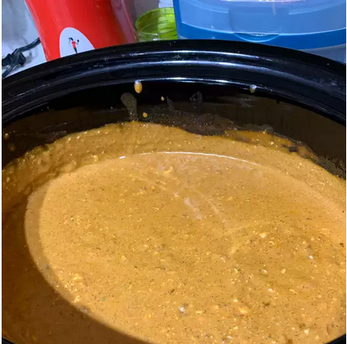

Slow Cooker Chili Queso Dip

Slow Cooker Chili Queso Dip
This recipe is easy to throw together and goes over great at potlucks.
Doubling the recipe makes the perfect amount to fit in my 5-quart slow cooker.
Turn up the heat by using hot salsa and jalapenos. Serve with tortilla chips.
Ingredients
- 1 tablespoon salted butter
- 1 onion, chopped
- 2 cloves garlic, minced
- 2 (15 ounce) cans chili without beans
- 3 (8 ounce) packages cream cheese, cubed
- 1 (16 ounce) jar medium salsa
- 2 tablespoons minced jalapeno peppers, or to taste (Optional)
Steps
- Heat butter in a skillet over medium heat; cook and stir onion and garlic until tender, 5 to 10 minutes. Transfer onion mixture to a slow cooker.
- Mix chili, cream cheese, salsa, and jalapeno peppers with onion mixture in the slow cooker.
- Cook on Low, stirring occasionally, for 4 hours.